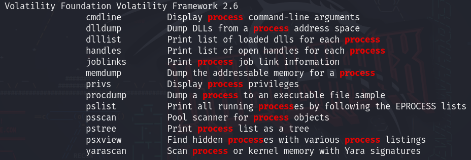
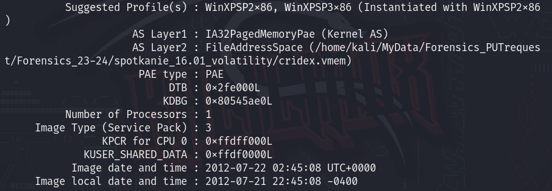
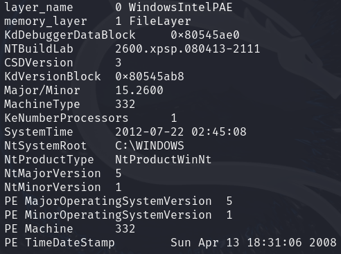

Memory forensics
Na badanym komputerze możemy znaleźć wiele śladów pozostawionych przez osobę go użytkującą, ale najpewniej najbardziej interesujące nas informacje można znaleźć wewnątrz zrzutów pamięci (eng: memory dump) - czyli utworzonym obrazie pamięci RAM. Zrzuty te bardzo często są bardzo obszerne i zawierają dużo informacji, których nie można łatwo wyciągnąć, np. poprzez komendę strings.
W tym przypadku bardzo pomocne jest narzędzie Volatility.
Oryginalne pliki źródłowe znajdują się w repozytoriach prowadzonych przez Volatility Foundation:
Różnice między wersjami
Czytając o Volatility możemy zadać sobie pytanie, dlaczego istnieją dwie wersje programu?
Podział pochodzi wprost z wersji Pythona, który odpowiada za uruchamianie skryptów:
Volatility(nazywane równieżVolatility2) korzysta z Pythona w wersji 2.Volatility3korzysta z Pythona w wersji 3.
Którą wersję wybrać?
Najnowsza stabilna i najbardziej bogata w funkcje wersja to Volatility 2.6 (stan na 10.03.2024). Nie jest niestety już ona dalej rozwijana, pomijając pomniejsze poprawki pluginów i bug fixów.
Oficjalnie rozwijana wersja to Volatility3, będąc jednocześnie najbardziej kompatybilną z nowymi wersjami systemów i programów.
W SKRÓCIE
- Dla starszych zrzutów pamięci i dla większej dostępności pluginów -
Volatility - Dla nowszych systemów i rozwoju -
Volatility3
Podstawy¶
Baadnie pamięci wbrew pozorom nie jest takie skomplikowane - najistotniejszą kwestią jest użycie odpowiedniego zestawu narzędzi. Dobrym podejściem jest postępowanie według schematu:
- Komendą
stringswyszukujemy jakichś wskazówek - Identyfikujemy profil obrazu (jaki OS, wersja, etc.)
- W
Volatility3identyfikacja profilu jest zbędna - można natomiast otrzymać dodatkowe informacje o oryginalnym systemie
- W
- Analizujemy listę procesów i szukamy podejrzanych rekordów
- Analizujemy historię commandline i listę plików - znowu szukamy podejrzanych rekordów
- Dodatkowe informacje o aplikacji oraz listę dostępnych pluginów można uzyskać poprzez komendę:
vol.py -h -
Chcąc wyszukać odpowiednią nazwę pluginu przeznaczonego do konkretnej operacji, możemy użyć komendy
grep.- Przykładowo, gdy nie wiemy jakiego pluginu użyć, aby wyszukać jakichś konkretnych informacji dotyczących procesów, możemy użyć takiej komendy:
<python2> vol.py -h | grep process
Profilowanie obrazu¶
Profilowanie jest prowadzone w Volatility2, by móc ustalić jaki był pierwotny system analizowanego obrazu pamięci.
W Volatility3 jest to opcja dodatkowa, która może zwrócić dodatkowe informacje.
vol.py -f "ścieżka/do/pliku" imageinfo

Głównym powodem uruchamiania tej komendy jest wyciągnięcie informacji o najlepiej dopasowanym profilu systemu, który należy później wykorzystywać do dalszej analizy.
W tym przypadku najbardziej prawdopodobną opcją jest WinXPSP2x86.
vol.py -f "ścieżka/do/pliku" windows.info

Analiza procesów¶
Do analizy procesów możemy użyć różnego rodzaju pluginów, zależnie od poszukiwanej informacji.
vol.py -f "ścieżka/do/pliku" --profile <profil> <plugin>
Przykładowe pluginy:
- pslist
- psscan
- pstree
vol.py -f "ścieżka/do/pliku" <plugin>
Przykładowe pluginy:
- windows.pslist
- windows.psscan
- windows.pstree
Dumpowanie danych¶
Dump procesów¶
Dump procesów o konkretnym PID (np. pliki .exe).
Volatility 3 dodatkowo dumpuje powiązane pliki DLL.
Używany np. do reverse engineeringu plików wykonywalnych procesów - w poszukiwaniu sygnatur malware'u bądź podobnych.
vol.py -f "ścieżka/do/pliku" --profile=<profil> procdump -p <PID> --dump-dir="ścieżka/do/zapisu"
vol.py -f "ścieżka/do/pliku" -o "ścieżka/do/zapisu" windows.dumpfiles --pid <PID>
Dump pamięci¶
Dump pamięci podręcznej procesów o konkretnym PID - może przechowywać dodatkowe informacje wykorzystywane przez proces w trakcie jego działania.
vol.py -f "ścieżka/do/pliku" --profile=<profil> memdump -p <PID> --dump-dir="ścieżka/do/zapisu"
vol.py -f "ścieżka/do/pliku" -o "ścieżka/do/zapisu" windows.memmap --dump --pid <PID>
Dump plików¶
Najpierw należy przeskanować listę dostępnych plików, a następnie wykorzystać informacje o offsecie w którym ten plik się znajduje.
- Skanujemy w poszukiwaniu plików:
vol.py -f "ścieżka/do/pliku" --profile=<profil> filescan"
vol.py -f "ścieżka/do/pliku" windows.filescan
- Wyciągamy plik o danym offsecie:
vol.py -f "ścieżka/do/pliku" --profile=<profil> dumpfiles --dump-dir="ścieżka/do/zapisu" -Q <offset>
vol.py -f "ścieżka/do/pliku" -o "ścieżka/do/zapisu" windows.dumpfiles
Źródła¶
- https://ctf101.org/forensics/what-is-memory-forensics/
- https://blog.onfvp.com/post/volatility-cheatsheet/